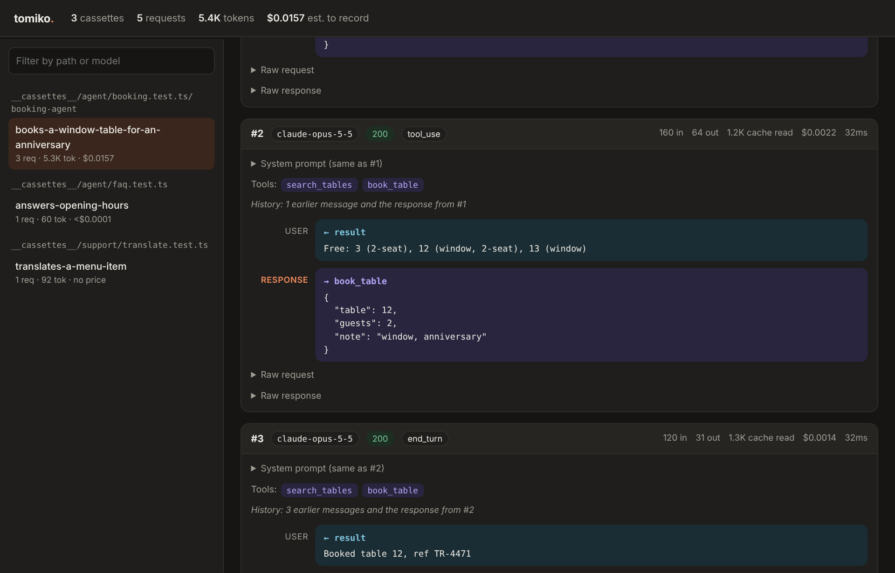

Record
Run your tests once with a key. Every request and response — streams chunk by chunk — lands in a JSON cassette next to the test.
tomiko records the real LLM traffic of your tests once, then replays it on every run after — offline, in milliseconds, for zero tokens, with the same answer every time.
Agent tests call a paid API, wait for seconds, and never give the same answer twice. tomiko records what the model really said — once — and replays it on every run after. Offline. In milliseconds. For nothing.
Run your tests once with a key. Every request and response — streams chunk by chunk — lands in a JSON cassette next to the test.
The cassette is plain, readable JSON. API keys and request headers never touch it. A changed prompt shows up in code review.
Every run after answers from the file: no network, no tokens, the same answer every time. On CI it never touches the API at all.
❯ ANTHROPIC_API_KEY=sk-ant-… npx vitest run ✓ booking.test.ts (1 test) 2412ms ✓ books a table 2409ms Test Files 1 passed tomiko · 1 cassette · 0 replayed · 1 recorded tokens · 3.1K in · 412 out cost · $0.0157 est.
❯ git add __cassettes__ && git diff --cached --stat __cassettes__/booking.test.ts/books-a-table.json | 214 +++ { "version": 1, "interactions": [{ "request": { "method": "POST", "url": "…/v1/messages" }, "response": { "status": 200, "body": { "type": "sse" } }, "meta": { "model": "claude-opus-5-5", "durationMs": 1830 } }] } # no x-api-key, no authorization — never stored
❯ CI=1 npx vitest run ✓ booking.test.ts (1 test) 8ms ✓ books a table 6ms Test Files 1 passed tomiko · 1 cassette · 1 replayed · 0 recorded network · off cost · $0.0157 est. · $0.0157 saved by replay
Some answers can't be checked with toContain. toMeet has a model judge them against your words. The verdict is recorded in the cassette, so it's asked once — then replayed free, offline, the same every time.
await expect(answer).toMeet("offers a full refund"); ✗ expected the output to meet: "offers a full refund of the order" Judge (claude-haiku-5-5): It refunds only the delivery fee, not the order. Output: "We're sorry your order arrived late. We've refunded the delivery fee to your card."
The API answers fine — and the model gets it wrong. Five new faults rewrite the answer in the provider's own format, streamed or not, with the matching stop reason. The cassette keeps what it really said.
fault.hallucinatedTool() // get_weather_v2 fault.brokenArguments({ on: 2 }) // {"city":"Li fault.refusal() // I'm sorry… fault.maxTokens() // cut halfway fault.emptyAnswer() // nothing at all stop reason max_tokens · length · incomplete · MAX_TOKENS
tomiko record prices a re-recording before spending a cent, runs it, then tomiko diff shows the change by behavior — new tool calls, cut-off answers, changed words, a new cost — not by bytes.
tomiko diff HEAD 20d18c0 → working tree ~ agent.test.ts/plans-a-trip.json ● behavior changed #1 calls get_weather → search_flights, get_weather #2 stop end_turn → max_tokens cut off answer ▰▰▰▰▰▰▱▱▱▱ 58% the same words tokens 1.3K → 1.5K +18% cost $0.0004 → $0.0006 +67%
tomiko matrix runs your suite on other models, live, side by side with what you use now: tests passed, cost of a run, time, and where behavior changed. Your cassettes are left alone.
model tests cost a run time gpt-5.4 now 6/6 ✓ $0.04 9.1s gpt-5.4-mini 6/6 ✓ $0.01 ÷3.3 4.9s gpt-4.1-mini 5/6 $0.0051 ÷6.9 4.3s gpt-5-nano 2/6 $0.00064 ÷55.2 2.5s ◆ gpt-5.4-mini passes every test at 3.3× less.
tomiko doctor reads your recordings offline for prompts that never hit the cache, tools never called, huge tool results, duplicate requests and oversized max_tokens — and puts a price on each.
▲ System prompt changes, never cached ≈ $0.36 "…Current time: 2026-10-13T12:00:10Z17Z…" ▲ read_file returns ≈ 11.0K tokens ×5 ≈ $0.11 ● The same request is sent twice ≈ $0.0082 ● 5 tools offered and never called ≈ $0.0076 ○ max_tokens 32,000, answers use 640 ◆ Fixing all of it saves ≈ $0.38 of $0.58 a run (66%).
Every recording is checked before it's saved: 20 key formats, the values of your own *_API_KEY variables, fields like password. Found one? Nothing is written and the test fails — showing where, never the secret.
SecretsFoundError: Cassette "agent.test.ts/reads the config" was not saved: it contains 1 secret. ● Anthropic API key sk-ant-api03-…f9Qa your $ANTHROPIC_API_KEY #2 request body › messages[3].content[0].content · secrets: "redact" placeholders; replays still match ❯ npx tomiko scan --fix
Gemini works end to end, with built-in prices for current Anthropic, OpenAI and Gemini models. tomiko prune replays your suite and removes the cassettes and requests no test uses anymore.
✔ Replayed your tests: they use 12 of 14 cassettes. − agent.test.ts/old-name.json no test used it − legacy.test.ts/greets.json its file is gone ~ agent.test.ts/plans-a-trip.json 2 of 5 unused Remove 2 cassettes and 2 requests? [y/N]
Importing tomiko/vitest adds eight matchers that read the cassette: which tools ran, with what arguments, in what order, how many requests it took, what it cost — and whether the answer means what it should.
toHaveCalledToolcalled, with arguments containing…toHaveCalledToolTimesexactly n timestoHaveCalledToolsInOrderthis order, others in betweentoHaveMadeRequestsno runaway loopstoHaveUsedModelstring or RegExptoCostLessThana budget, in dollarstoHaveUsedFewerTokensThanevery token countedtoMeetnewjudged by a model, replayed afterThe API fails
The model misbehaves new
System prompt, tool calls and results, the answer — and the tokens, cost and time of each step. One HTML file, no server, ready to attach to a CI run.

Sneak peek · next major release
In the next major release, Amazon Bedrock joins Anthropic, OpenAI and Gemini as a supported platform: record and replay the models you run there, with the same cassettes and matchers.
Follow the releases on GitHub